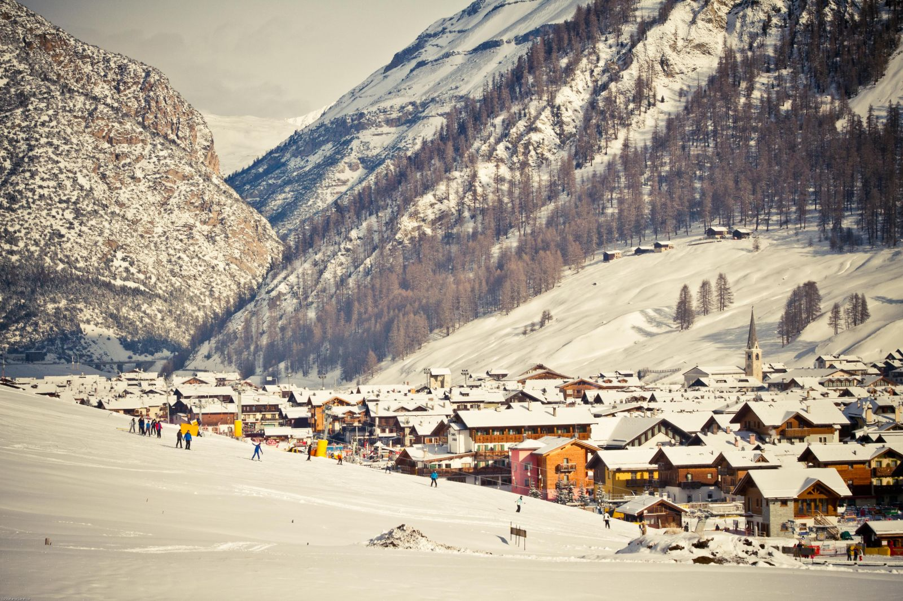
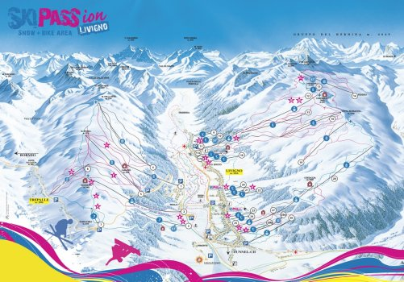
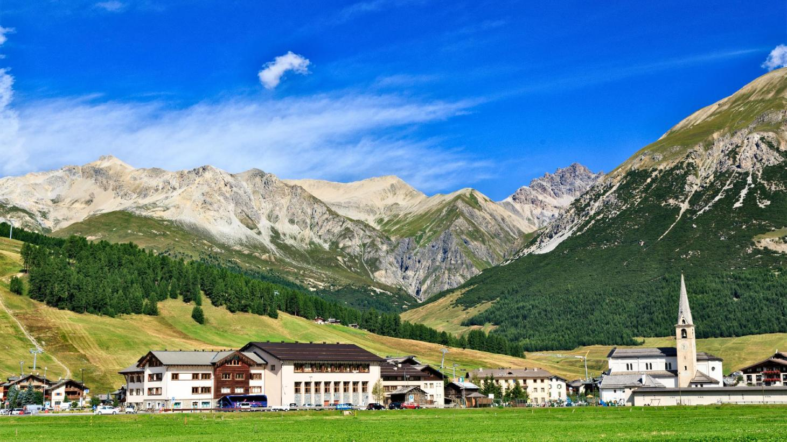
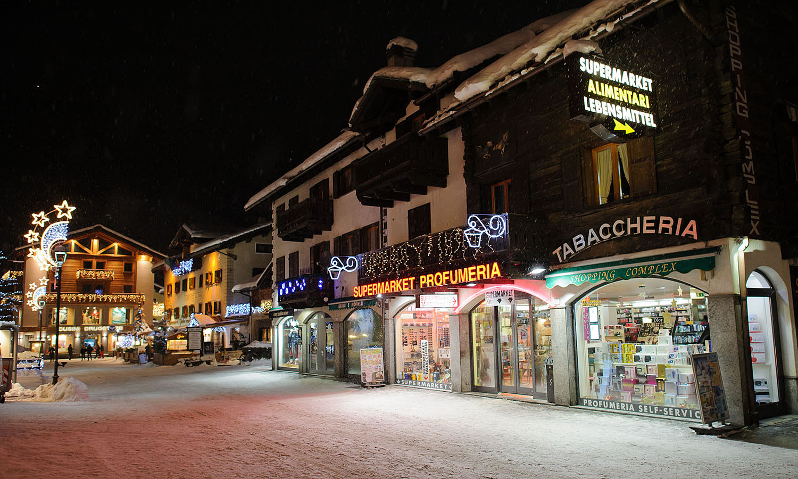
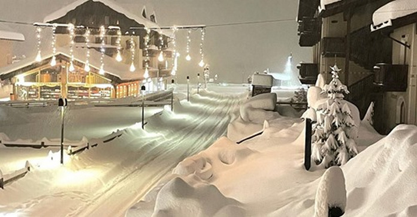

Mans mīļākais slēpošanas kūrorts, Livingo
Pirmo reizi, kad devos slēpot uz alpiem, biju vēl jauns, un, protams, pirmais brauciens biju uz kūrortu - Livingo. Kad pirmo reizi ieraudzīju lielos kalnus, uzreiz iemīlējos viņos, un zināju, ka gribēšu vēl un vēl atgriesties. Un tā sanāca, ka nākamos 15 gadus, katru gadu vismaz vienu nedēļu biju Livingo. Tāpēc teiktu, ka šo skaisto pilsētiņu uzskatu, par saviem otrajiem laukiem.
Fakti, par Livingo:
- Livingo, ir liels slēpošanas kūrorts, kur augstākā virsotne, sasniedz par 3000m 
- Vasarā šeit var doties pārbraucienos vai nobraucienos ar riteni 
- Pilsētā iriekļauta bez nodokļu zonā, tāpēc daudzas lietas var noopirkt stipri lētāk, nekā citur, tāpēc pilsēta ir pilna ar veikaliem 
Kā es iemīlējos Livingo?
Pirmo reizi, kad ieraudzīju Livingo, uzreiz sajutu tās auru. Visi cilvēki ir super priecīgi un smaidīgi. Kalns izskatās apbrīnojams, it īpaši, kad biju pirmo reizi, jo biju vēl jauns (ja pareizi atceros,tad man bija 7 gadi). Iedomājaties, būt tik jaunam un redzēt šos lielos kalnus, tad uzreiz visu izsakata, pats par sevi.
Lielas, kas man patīk par Livingo:
- Pilsētas aura
- Smaidīgie un laipnie cilvēki
- Slēpošanas kūrorts
- Vakara pastaigas pa pilsētu
- Restorāni un garšīgais ēdiens
- Protams, pilsētas arhitektūra
Par cik Livingo pilsēta atrodas tik augstu virs jūras līmeņa, slēpošana ir iespējama, pat Aprilī, un dažreiz Maijā. Un apskataties uz šo skaistumu:
Liekas, ka pat cilvēks, kam nepatīk ziema, nevar neiemīlēties šajā skatā. Protams, dzīvē tas ir vēl iespaidīgāk.
Interesanti fakti:
- Neskatoties, ka Ziemā Livingo esmu bijis ļoti daudz reizes, vasarā, esmu bijis tikai vienreiz.
- Tieši Livingo iemācijos kantēt.
- Esmu piepildījis vairākus savus sapņus šajā pilsētā:
- Slēpojis alpos
- Nopircis savas pirmās pūdera slēpes
- Nopirku savu pirmo rokas pulksteni
- Izbaudījis slēpošanu pa pūderi